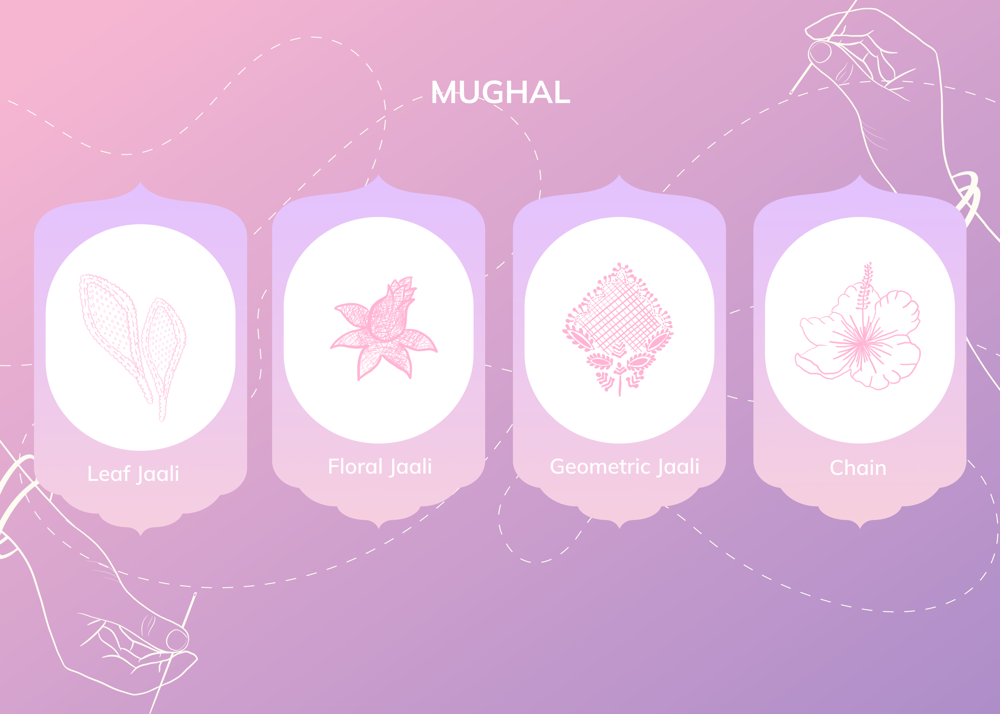
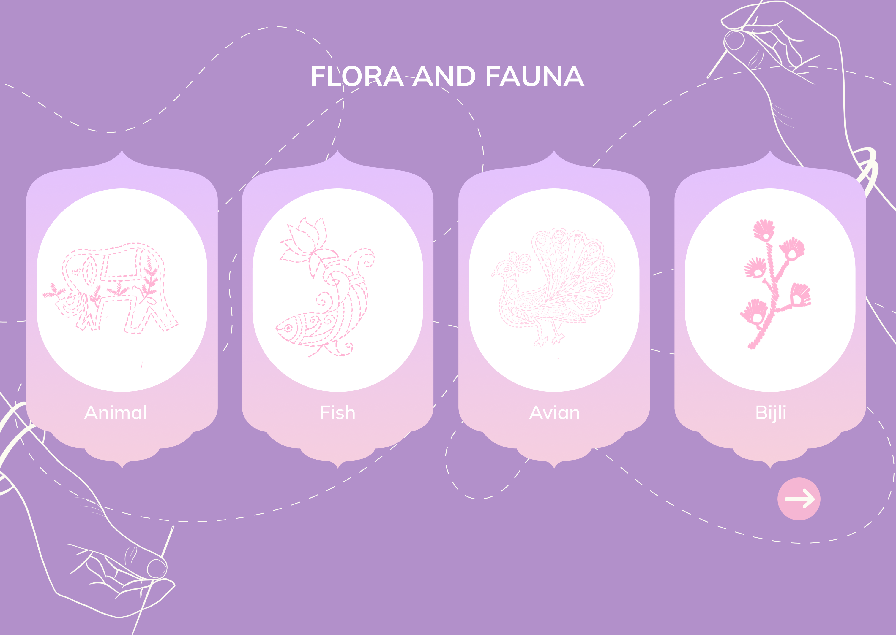
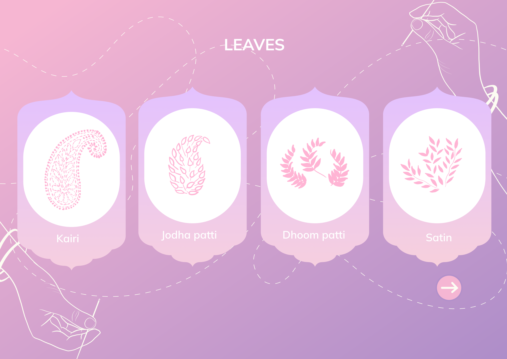
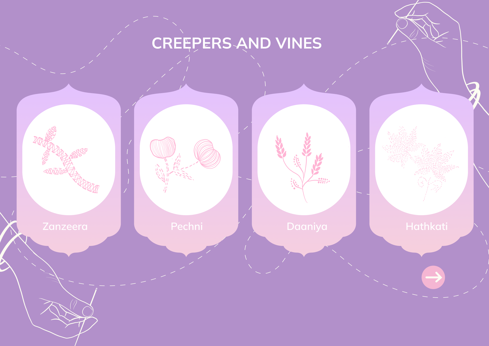

FLAT STITCHES
Chikankari's intricate designs wouldn't be complete without its foundation - the flat stitches. These workhorses of the embroidery style, like "tepchi" (running stitch) and "bakhiya" (shadow work), create the shapes and outlines of the motifs. "Tepchi" lays the groundwork, forming the base for more intricate stitches. "Bakhiya," often done on the reverse side of the fabric, allows the design to subtly emerge on the right side with a beautiful shadow effect. Together, these flat stitches provide the canvas for the artistry to unfold, adding definition and structure to the delicate Chikankari masterpieces.
EMBOSSED STITCHES
Chikankari's intricate designs wouldn't be complete without its foundation - the flat stitches. These workhorses of the embroidery style, like "tepchi" (running stitch) and "bakhiya" (shadow work), create the shapes and outlines of the motifs. "Tepchi" lays the groundwork, forming the base for more intricate stitches. "Bakhiya," often done on the reverse side of the fabric, allows the design to subtly emerge on the right side with a beautiful shadow effect. Together, these flat stitches provide the canvas for the artistry to unfold, adding definition and structure to the delicate Chikankari masterpieces.
Types of Motifs

Chikankari's magic lies in its masterful use of stitches. From the base layer to captivating details, each stitch plays a specific role. Flat stitches like "tepchi" and "bakhiya" lay the groundwork, outlining motifs and creating subtle shadow effects. Then, embossed stitches like "murri" and "phanda" come into play, adding dimension and texture with their raised knots and dense satin stitches. This interplay of flat and raised stitches creates a captivating visual dance, where light interacts with the fabric's surface, highlighting intricate details and breathing life into the exquisite Chikankari designs.
Mughal
Flora and Fauna
leaves
Creepers and Vines



